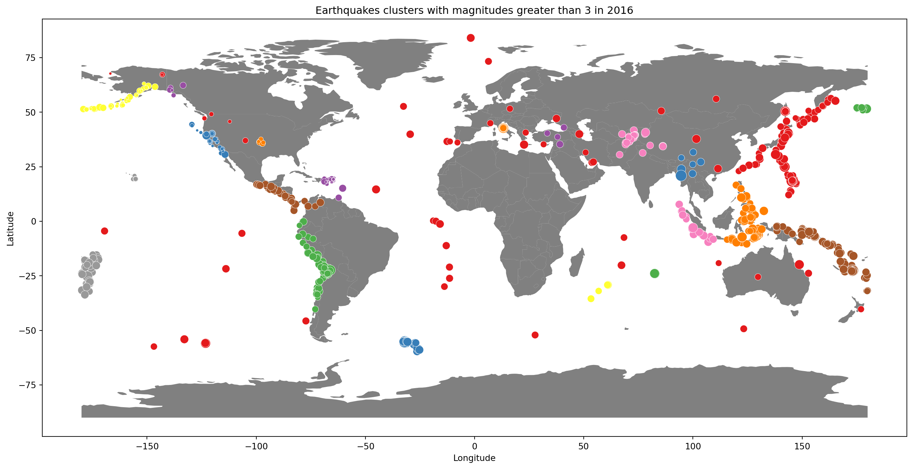

Code
import pandas as pd
import geopandas as gpd
import matplotlib.pyplot as plt
import seaborn as sns
from sklearn.cluster import DBSCAN
import warningsEllie Woodward
November 10, 2023
Clustering is pivotal in machine learning for its ability to unearth hidden patterns within datasets. By employing algorithms that group similar data points together based on shared characteristics, clustering enables us to discern valuable insights that might otherwise remain obscured. This process is particularly crucial in unsupervised learning, where the data lacks explicit labels or categories. Through clustering, we can reveal natural structures, identify trends, and segment data points, aiding in tasks like customer segmentation, anomaly detection, and image recognition. Essentially, clustering acts as a guiding light, enabling us to navigate and understand complex data landscapes, facilitating better decision-making and predictive modeling in machine learning applications.
For example, I found a dataset (here) encompassing global earthquake records from 2016. To focus on studying earthquakes ranging from moderate to severe intensity (Magnitude 3 or higher), clustering techniques serve as a valuable approach. In this scenario, leveraging clustering techniques becomes instrumental in extracting meaningful insights. One such clustering method suited for this task is DBSCAN (Density-Based Spatial Clustering of Applications with Noise). DBSCAN operates by identifying and grouping data points based on their density within a given proximity. Imagine plotting earthquake occurrences on a geographical map, with each point representing a seismic event. DBSCAN would efficiently cluster together points that are densely located, signifying regions or areas where earthquakes of comparable magnitudes cluster. Through this method, earthquakes nearby are visually represented with the same color, aiding in recognizing spatial patterns and clusters of seismic activity.
In the code below, we start by refining our dataset, extracting the essential details such as Magnitude, Longitude, and Latitude. We filter out earthquakes with a magnitude under 3. Then, we implement DBSCAN. By setting ‘eps’ to 6, we define the proximity for points to be considered neighbors. Additionally, ‘min_samples’ is set to 4, requiring a minimum of four earthquakes to form a cluster. This configuration leads to the formation of sparser clusters due to the specified criteria.
The graph below illustrates our plotted data, with distinct colors representing different clusters, while isolated red points denote random earthquakes not associated with any cluster. Larger points on the graph indicate earthquakes of higher magnitude. This visualization provides a clear overview, enabling us to identify regions exhibiting significant earthquake activity.
worldmap = gpd.read_file(gpd.datasets.get_path("naturalearth_lowres"))
# Creating axes and plotting world map
fig, ax = plt.subplots(figsize=(18, 10))
worldmap.plot(color="gray", ax=ax)
sns.scatterplot(x=df.Longitude, y=df.Latitude, hue=labels, palette='Set1', size=df.Magnitude, sizes=(10,200)) # plotting the clusters
ax. legend_ = None
plt.title("Earthquakes clusters with magnitudes greater than 3 in 2016")
plt.xlabel("Longitude") # X-axis label
plt.ylabel("Latitude") # Y-axis label
plt.show() # showing the plot
warnings.filterwarnings('ignore')
In this example, clustering served to group earthquakes based on their spatial proximity—a excellent application of unsupervised learning. Starting with raw data, we organized data points into clusters by identifying similarities. Subsequently, we explored these clusters to discern patterns within the data.
It’s important to note that the algorithm itself doesn’t interpret the data’s meaning. However, when visualized, particularly on a map, distinct patterns emerge within each cluster. This visualization vividly demonstrates that certain regions of the world are more susceptible to seismic activity than others.
I hope this blog post aids in your comprehension of Clustering and the realm of unsupervised learning, showcasing its utility in uncovering patterns and insights from unstructured data.
Thank you!
References: DBSCAN | Google Clustering | Inspiration